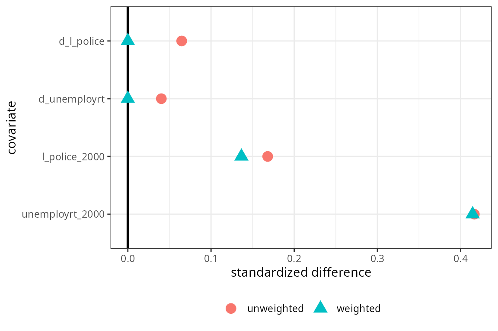
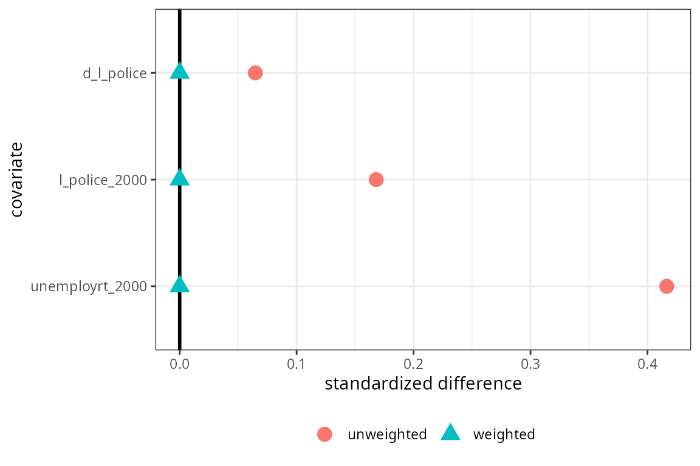
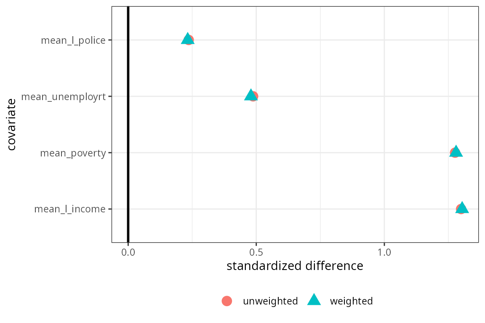
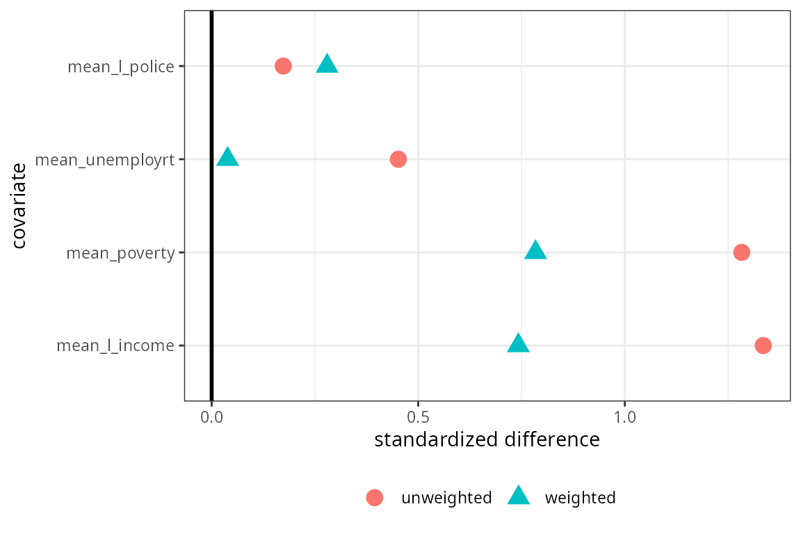

Covariates: Implicit Weights and Covariate Balance
Source:vignettes/covariate-balance.Rmd
covariate-balance.RmdWhen parallel trends holds only conditional on covariates, researchers often add the covariates to a TWFE regression. Caetano and Callaway (2024) show that the TWFE coefficient can then be written as a reweighting estimator: a weighted comparison of changes in outcomes between treated and untreated units. The implicit weights balance the covariates that enter the regression in the form they enter it (for example, the change in a time-varying covariate), but not other functions of them, such as their levels. If parallel trends depends on covariates that the weights do not balance, the TWFE estimate can be biased even when treatment effects are the same for everyone.
This suggests a diagnostic: compute the implicit weights and check how well they balance the covariates that parallel trends is thought to depend on. The same diagnostic applies to augmented inverse probability weighting (AIPW) and regression adjustment, whose implicit weights balance every covariate in the outcome model.
The example follows the application in Caetano and Callaway (2024):
the effect of stand-your-ground laws on homicides (Cheng and Hoekstra,
2013), using a state-level panel for 2000-2010 from the
causaldata package.
library(twfeweights)
data(castle, package = "causaldata")
castle <- as.data.frame(castle)Two periods
With two periods, take 2000 (before any state adopted a law) and 2010. The group variable is 0 for states that had not adopted by 2010 and 2010 for those that had.
castle2 <- subset(castle, year %in% c(2000, 2010))
castle2$G <- BMisc::get_group(castle2, "sid", tname = "year", treatname = "post")TWFE regression
With two periods, a TWFE regression with time-varying covariates is a
regression of the change in log homicides on the treatment indicator and
the change in the covariates. two_period_reg_weights()
returns its coefficient, the implicit weights and a balance table:
tw <- two_period_reg_weights(
yname = "l_homicide", tname = "year", idname = "sid", gname = "G",
xformula = ~ l_police + unemployrt, data = castle2
)
tw$est
#> [1] 0.1218008
tw$cov_balance_df[, c("covariate", "unweighted_diff", "weighted_diff")]
#> covariate unweighted_diff weighted_diff
#> 1 d_l_homicide 0.118358801 1.218008e-01
#> 2 d_l_police -0.006490046 -1.040834e-17
#> 3 d_unemployrt 0.078160863 -3.552714e-15
#> 4 l_police_2000 0.034479255 2.800713e-02
#> 5 unemployrt_2000 0.362725820 3.609457e-01The first row is the outcome; its weighted difference is the TWFE
estimate. The weights balance the changes in police and
unemployment exactly, but the 2000 levels stay about as
unbalanced as before weighting. If trends in homicides depend on the
level of these covariates, TWFE does not adjust for it.
ggtwfeweights() plots standardized differences (differences
divided by the pooled standard deviation, see
pooled_sd()):
ggtwfeweights(tw)
AIPW and regression adjustment
two_period_aipw_weights() does the same for AIPW. The
outcome model below includes the 2000 levels of both covariates and the
change in police; setting pscore_formula = ~1 and
pscore_d_covs_formula = ~1 (no covariates in the propensity
score) gives regression adjustment.
ra <- two_period_aipw_weights(
yname = "l_homicide", tname = "year", idname = "sid", gname = "G",
xformula = ~ l_police + unemployrt, d_covs_formula = ~l_police,
pscore_formula = ~1, pscore_d_covs_formula = ~1, data = castle2
)
ra$est
#> [1] 0.1216572
ra$cov_balance_df[, c("covariate", "unweighted_diff", "weighted_diff")]
#> covariate unweighted_diff weighted_diff
#> 1 d_l_homicide 0.118358801 1.216572e-01
#> 2 d_l_police -0.006490046 6.158268e-17
#> 3 l_police_2000 0.034479255 0.000000e+00
#> 4 unemployrt_2000 0.362725820 -1.776357e-15Every covariate in the outcome model is balanced exactly, in levels
and in changes. The weightsname argument adds sampling
weights, and extra_balance_vars_formula reports balance for
covariates that are not in the model.
ggtwfeweights(ra)
Two further diagnostics are worth reporting alongside balance. The
ess element is the effective sample size of the comparison
group under the implicit weights (see
effective_sample_size()): the more the weights are
concentrated on a few units, the smaller it is. And
ggtwfeweights(..., plot_relative_to_target = TRUE) shows
whether the weights also move the treated group away from its own
covariate distribution.
Staggered adoption
States adopted stand-your-ground laws in different years, so the full panel has staggered adoption. The group variable is now the first year a state is treated (0 if never treated in the sample).
castle$G <- BMisc::get_group(castle, "sid", tname = "year", treatname = "post")
table(castle$G[castle$year == 2000])
#>
#> 0 2006 2007 2008 2009 2010
#> 29 1 13 4 2 1TWFE regression
implicit_twfe_weights() decomposes the TWFE coefficient
into weighted comparisons between each treated group and the
never-treated group in each year. With
base_period = "gmin1", each comparison uses the year before
the group was first treated as its base period, as in
did::att_gt().
twm <- implicit_twfe_weights(
yname = "l_homicide", tname = "year", idname = "sid", gname = "G",
xformula = ~ l_police + unemployrt, base_period = "gmin1", data = castle
)
twm$est
#> [1] 0.07016711
coef(fixest::feols(l_homicide ~ post + l_police + unemployrt | sid + year,
data = castle
))["post"]
#> post
#> 0.07016711summary() splits the estimate.
alpha post only is the part that comes from post-treatment
comparisons; pta violations bias is the part that comes
from pre-treatment comparisons, which should be close to zero if
parallel trends holds before treatment. Here most of the TWFE estimate
comes from pre-treatment comparisons.
s <- summary(twm)
#> alpha twfe: 0.0702
#> alpha decomp: 0.0701
#> alpha post only: 0.0181
#> pta violations bias: 0.052
#> remainders: 1e-04
#> ess: 434.8558
#>
#> summary of twfe decompositiontwfe_cov_bal() adds balance statistics for any
covariates, which are averaged over time within each state first. The
summary and plot average them over post-treatment cells:
twm <- twfe_cov_bal(twm, ~ l_police + unemployrt + poverty + l_income)
ggtwfeweights(twm)
Regression adjustment
implicit_aipw_weights() estimates the overall average
treatment effect on the treated,
,
by AIPW or regression adjustment for each group and post-treatment year,
and combines them as in Callaway and Sant’Anna (2021). With few states
in each timing group, the propensity score is hard to estimate, so
regression adjustment is a natural choice here. Covariates in
xformula enter through their level in the base period
(),
as in did::att_gt(); d_covs_formula adds their
change since the base period.
ram <- implicit_aipw_weights(
yname = "l_homicide", tname = "year", idname = "sid", gname = "G",
xformula = ~ l_police + unemployrt, d_covs_formula = ~ l_police + unemployrt,
pscore_formula = ~1, pscore_d_covs_formula = ~1, data = castle
)
ram$est
#> [1] 0.1051381Without d_covs_formula, the estimate equals
did::att_gt() with the same covariates and
est_method = "reg", aggregated with
did::aggte(type = "group").
ram <- aipw_cov_bal(ram, ~ l_police + unemployrt + poverty + l_income)
ggtwfeweights(ram)
Comparing the two balance plots shows which covariates each estimator balances, and how well. The same comparison with other covariates, in the outcome model or only in the balance check, is a way to see how sensitive the estimate is to how covariates enter.
References
Caetano, Carolina and Brantly Callaway. “Difference-in-Differences when Parallel Trends Holds Conditional on Covariates.” Working paper (2024). arXiv:2406.15288.
Callaway, Brantly and Pedro H. C. Sant’Anna. “Difference-in-Differences with Multiple Time Periods.” Journal of Econometrics 225.2 (2021): 200-230.
Cheng, Cheng and Mark Hoekstra. “Does Strengthening Self-Defense Law Deter Crime or Escalate Violence? Evidence from Expansions to Castle Doctrine.” Journal of Human Resources 48.3 (2013): 821-854.